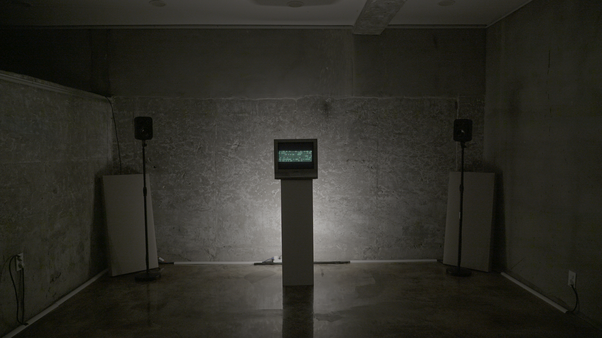
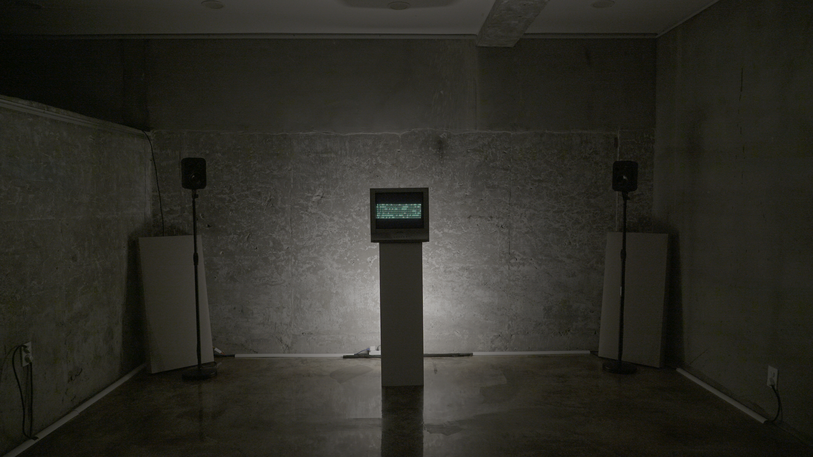

Media Art


공간은 태초부터 존재했으며 언어는 미개함 속에서 탄생했다.하나의 축을 보지 못하고 이동하지 못해 공간의 이면은 그림자로 남게 되었으며 물리 법칙을 이기지 못해 은 평면에 갇히고 말은 점에 머물렀다.
공간은 언어를 가두고 언어는 공간에 갇혀 세기의 단위를 넘어 사용되었다.하지만 기술의 발전으로 공간은 경계에 틈이 생기기 시작하며 확장되었다. 그동안의 공간은 물리적인 공간(空間)으로 여겨졌지만 COVID-19 이후 공간은 자아가 향유할 수 있는 인식적인 공간으로 여겨지기 시작했다.
새롭게 발견된 공간은 대부분 디지털 기술을 활용한 VR, 메타버스와 같은 가상의 공간이었다.
가상 공간에 입장한 사용자는 하나의 데이터 뭉치가 되어 손쉽게 수정되고 복사되고 삭제되었다.
이에 사용자는 물리적 공간이 제한한 범위를 넘어 경험할 수 있었으며 작가는 변화된 공간에 맞춰 넓어진 틀 속에서 해방될 수 있는 언어에 주목해 새롭게 탄생할 공간과 언어를 예상하고 구현하는 프로젝트인 “신생”을 작업하기 시작했다.
인간은 4차원의 시공간에 존재하며 3차원을 향유하고 2차원을 인식한다.
글이 탄생할 적에 우리는 중력을 비롯한 물리법칙을 극복할 수 없었고 눈은 평면만을 인식하기에 글은 평면에 갇혔다. 또한 공간을 뛰어넘을 수 없었기에 말은 점에 머물러 뜻은 ‘말’ 속에만 존재하게 되었다.
수많은 기술의 등장과 발전에도 말과 글은 기존의 틀을 벗어나지(벗어나려 하지) 않았다.
하지만 새로운 공간이 향유되기 시작하며 기존의 제약을 벗어 던질 수 있게 되었다.
글은 더이상 평면에 갇히지 않아도 되며 뜻은 ‘말’에서 벗어나 존재할 수 있게 되었다.
말과 글은 해방되어 새로이 태어날 것이며 이는 마치 ‘신조어’처럼 하나의 작은 문화적 움직임으로 시작될 것이다.
스피커 속 전자석으로 진동하던 소리는 우리의 입으로 옮겨 갈 것이고 모니터에 그려지던 픽셀은 우리의 손에 의해 쓰여질 것이다.
지금은 어린 아이의 낙서, 옹알이와 같은 것에 불과하지만 언어는 새로이 탈피하여 공간이 언어를 바꿨듯 문화를 비롯한 모든 것에 변화를 가져올 것이다.
“신생”은 기술의 발전으로 탄생할 새로운 공간과 언어를 인공지능을 비롯하여 현인류의 기술을 이용해 구현하는 프로젝트로 공간에 초점을 맞춘 ‘신생공’과 언어에
초점을 맞춘 ‘신생어’로 구성된다. 그 중 <신생어>는 ‘말’, ‘글’, ‘대화’라는 부제로 나뉘어 크게 3개의 연작으로 진행된다.
프로젝트와 관련된 작업을 처음 발표하는 전시 <<신생;>>은 <신생공>, <신생어 : 말>, <텍스트 ㄱㄴㄷ>, 총 3개의 작품을 선보인다.
<신생공>은 소리를 통해 기존 공간의 새로운 가능성을 더불어 새로운 공간의 모습을 발견하는 작품이다.
별도로 학습된 인공지능을 통해 소리만으로 생성되는 공간은 온갖 공간의 모습을 이어 붙인 듯한 모습을 보이며 생성에 사용된 입체음향 사운드와 함께 12개의 모니터로 구성된 미디어월에 재생된다.
<신생어 : 말>은 현존하는 다양한 언어를 인공지능을 이용하여 학습시켜 새로운 발음체계를 확립하며 입체음향 시스템을 통해 뜻이 말소리 이외의 요소에 담길 수 있도록 한 작품이다.
8채널 입체음향 시스템을 통해 재생되는 새로운 언어의 말소리는 하나의 점에 머무르지 않고 끊임없이 움직이며 다양한 목소리로 발화된다.
Flexible LED Matrix 디스플레이를 통해 실시간으로 재생되는 소리를 시각화하며 이는 새로운 언어의 시각적 구현을 목표로 하는 작업 <신생어 : 글>을 위한 실험을
목적으로 제작되었다.
<텍스트 ㄱㄴㄷ>은 <신생어 : 말> 작품 속 신생어 말소리를 생성함에 있어 사용된 텍스트를 직접적으로 전달하는 작품이다.
인공지능 학습에 사용된 100여 개의 언어로 변환된 텍스트는 아날로그 TV를 를 통해 보여진다.
(글 : 이지원)
1
신생어 : 말
2023
가변 크기
단채널 영상, 8채널 입체음향 시스템, 인공지능 생성 사운드, 원형 LED Matrix 디스플레이
2
신생공
2023
2160. x 2500. x 1750. mm
단채널 영상, 8채널 입체음향 시스템, 앰비언스 사운드, 모니터, 알루미늄 프로파일, 수조, 물
3
텍스트 ㄱㄴㄷ
2023
410. x 400. x 380. mm
단채널 영상, 아날로그TV
 

새로운 차원의 공간과 언어를 예상하고 구현하는 프로젝트 '신생'의 일환으로 제작된 <신생어 : 옹알이>는 새롭게 태어날 언어의 말을 아직 온전하지 않은
'옹알이'와 같은 형태로 전달한다.
언어는 별다른 기술적 기반이 없던 때에 탄생하여 현시대까지 그 원형에서 크게 벗어나지 않고 유지되었다.
정체된 언어와 달리 기술은 끊임없이 발전하여 점차 새로운 차원에 다가가는 경지에 이르렀다.
새로운 차원의 경험을 현실로 끌어오기 위해선 언어의 변화가 필수적이다.
인류는 기술을 통해 신체적 한계를 극복한다.
중력으로 인한 이도의 한계, 신체 기관으로 인한 인식의 한계, 결코 벗어날 수 없는 시간의 한계.
인류는 수많은 한계를 기술로 극복했고 이는 시간이 갈수록 가속화되고 있다.
한계가 하나씩 없어짐에 따라 갇혀있던 문화는 해방되었고 기술의 발전에 가속이 붙은 만큼 그에 따른 문화의 변화도 요동치고 있다.
그리고 그 변화의 요동 끝엔 언어의 변화가 있을 것이다.
현재의 기술은 공간의 한계를 부숴주었다.
더이상 물리적 공간에 같여있는 것이 아닌 실존하지 않는 인식적 공간에서 향유할 수 있게 되었고 그로 인해 물리 법칙으로 인한 창작의 한계와 신체적 요인으로 인한 인식의 한계 등 많은 것이 바뀌었다.
이를 시작으로 세기 단위에서 벗어난 역사를 가진 언어는 생겨난 이후 처음으로 평면의 허물을 벗어 입체로 해방될 것이며 그에 맞춰 읽고 쓰여질 것이다.
이런 언어의 변화는 현시대의 '신조어'와 같은 하나의 '작은 움직임'으로 이미 시작되었다.
새롭게 태어나고 있는 언어는 아직 제대로 발음되고 쓰여질 수 없으며 알아들을 수 없는 옹알이로 전달된다.
이는 '작은 움직임'의 태동이다.
(글 : 이지원)
1
신생어 : 옹알이
2023
가변 크기
6채널 입체음향 시스템, 인공지능 생성 사운드, 2채널 영상, LED Matrix 디스플레이
2
텍스트 01
2023
410. x 400. x 380. mm
단채널 영상, 스테레오 사운드, 아날로그TV


리본시티의 작품들은 각자 다양한 장르와 색깔을 가지고 있지만, 각자의 자리에 안주하지 않고 전통, 현재, 미래지향의 음표를 넘나들며 리본(RIBBOM)처럼 서로 맞닿아 이어진 채 지금, 여기의 사유를 담아 새로 태어난다.(REBORN)
이들은 오늘날 도시(CITY)라는 유동의 환경에서 함께 공명한다.
서로 교차하며 특유의 감각을 만들고, 변화하는 일상에서 새로운 증후를 감지하는 한편, 자연의 원형을 그리워하고 포착하기도 한다.
같은 고시 안에서 우리는 서로 닿아있고, 현재를 살아간다.
리본처럼 서로 이어진 채 관객을 포근하게 안아주는 리본 시티에 여러분을 초대한다.
인류는 지구를 지켜야 할 운명이고 지구로부터 선택된 파수꾼의 역할을 한다. 2천년의 시 간을 보내고 있는 인류의 공간을 이지원 작가는 제한적인 공간으로부터 자유롭기를 바라고 있다. 지구 위서 살아가고 있는 우리들이 아니라 새로운 시, 공간에서의 삶을 꿈꾼다는 것, 영원한 삶을 영위 할 수 없는 우리가 사고하면 이루어질 수 있는 가상의 공간, 그곳을 작가 는 상상한다. 우리의 기억이 유지되고 기억이 가능하다면 그곳은 작가가 만들고자 하는 그 곳이 아닐까, 기술의 집합으로 가상의 새로운 세계를 구현해서, 앞으로 관객과 어떠한 방법 으로 소통하는지도 기대되는 부분이다.
(전시 설명 中)
1
신생공
2023
2160. x 1100. x 1920. mm
단채널 영상, 스테레오 사운드, 모니터, 알루미늄 프로파일, 수조, 물


<VIVID>는 Visualizing Virus Diffusion의 약자로, 바이러스의 유전 데이터와 바이러스의 확산 방식을 사운드와 조명을 통해 시청각적으로 제시하는 사운드 비주얼 설치 작품이다. 알고리즘 기반으로 소리화한 바이러스의 유전 정보와 소리의 움직임으로 표현한 바이러스의 확산은 8채널 입체음향 시스템을 통해 표현되고 이에 반응하여 자체제작한 7개의 조명을 통해 시각화된다.
1
VIVID (Visualizing Virus Diffusion)
2021
가변 크기
8채널 입체음향 시스템, RNA 기반 생성 사운드, LED 바 조명, 프로젝션 매핑


<어드메>는 한반도 비무장지대(Korean Demilitarized Zone, DMZ)를 모방한 가상의 생태계에서 일어나는 현상들을 소리와 빛으로 표현한
사운드 인스톨레이션 작업이다.
본 작품은 DMZ에 서식하는 생물들의 DNA 데이터와 가상 생태계 알고리즘을 통해 생성된 사운드를 돔형 구조의 20.2채널 입체음향 시스템을 통해 들려줌으로써
생태계의 입체적인 먹이그물 구조가 가진 역동성과 균형을 은유적으로 전달한다.
바이오필리아(Biophilia, 생명사랑),
다소 신성하게 들리기도 하는 이 단어는 환경 파괴로 인한 재해와 감염병의 대유행에 크게 위협받고 상처받은 지구 생명을 위한 여망입니다.
포스트 코로나 시대라고 불리는 바이러스 대유행 시대(혹은 이후 시대)가 도래하며 우리는 비로소 생태계 하나의 종으로써 인류를 되돌아보기 시작했습니다.
사실, 지구 생명과 관련한 담론들은 전혀 새롭지 않습니다. 수 십 년 전부터 우리 주위를 맴돌던 환경보호 캠페인은 시민단체와 정부가 주도하는 일종의 프로파간다로 치부되었고, 뉴스에서 쏟아내는 빙하의 해빙과 이상기후는 지척에서 격동하는 이 문명에 비하면 우리의 마음 한 켠에 막연하게 쌓여 있는걱정거리 정도로만 여겨졌을 뿐입니다.
그러나 슬로건으로만 여겨졌던 지구에 대한 외침들은 2020년 지금, 생존을 위한 행동강령이 되었습니다.
자연의 영역을 침범한 대가로 하루에도 수 십 만 명을 바이러스로 잃고 있는 인류가 이제서야 자연과 인간이 하나의 순환고리 안에 있음을 깨닫게 된 것입니다. 오만하게도 인간과 자연계를 이분했던 인류는 우리 안에 내재된 바이오필리아를 깨우치고 지구 공생을 위한 윤리관과 태도를 가질 준비를 하고 있습니다.
무한경쟁에서 균형으로, 고립된 인간에서 상호의존적인 인간으로, 파괴적 인류세에서 창의적이고 평화로운 인류세로 변화의 발걸음을 내딛고 있습니다.
흙 한 줌에 담겨 있는 생명다양성에 대한 작은 경외로부터 피어나는 생명사랑의 본성은 지구 전이의 에너지에 긍정적인 힘을 가득 채울 것입니다.
(전시 설명)
1
어드메
2020
8000. x 8000. x 6000. (mm)
메탈 지오데식 돔 구조물, 20.2채널 입체음향 사운드, DNA 기반 생성 음악, LED 무빙 조명


<ARchitecture of DMZ>는 AR(증강현실) 기반 예술로, 시각화와 청각화를 통해 DMZ를 구성하는 동식물과 같은 생태계 구성원들을 새로운 단위의 시각으로 탐구한다. 작품을 구성하고 있는 가 페트리 접시는 각 생물 종의 특성을 나타내는 DNA 데이터 시각화한 이미지가 담겨있으며, AR 디바이스로 이를 인식하면 DNA 데이터를 청각화한 소리를 감상할 수 있다. 벽면에 부착된 페트리접시들 사이의 연결을 따라 움직이며 DMZ를 구성하고 있는 먹이 그물의 형태를 탐색하며 DMZ 구성원들 사이의 관계 구조를 짐작하게끔 한다. 모바일 디바이스를 통해 미시적인 유전자 구조의 스케일과 거시적인 생태계 층위의 스케일을 시각과 청각을 이용해 공감각적으로 경험함으로써 새로운 범주의 휴먼 스케일을 제안한다.
1
ARchitecture of DMZ
2020
가변 크기
AR, 생물 종 기반 이미지 마커, DNA 생성 기반 음악
Participated works

<들리지 않게 들려주고 싶은 말>은 자신의 ‘어두운 감정’을 숨기고 있는 모든 사람들을 위한 작품이다. 자신의 감정을 오롯히 드러내는 일은 생각보다 어렵다. 즐겁고 행복한 일은 상대적으로 털어놓기 쉽다. 그러나 슬픔, 외로움과 같은 어두운 감정은 그렇지 못하다. 들어 줄 적절한 사람이 없어서, 힘든 것을 잘 털어놓지 못 하는 성격이라서, 소셜네트워크와 주변에는 좋은 일 말 해야 할 것 같아서 자신이 진짜 보여주고 싶은 감정을 담아만 둔다. 그러다보면 그것들은 무의식 중에 겹겹이 쌓여 결국 사람을 무기력하고 우울하게 만든다.
내가 사람들에게서 드러내지 않으려고 참는 감정은 슬픔, 외로움, 불안, 두려움과 같은 것들이다. 어머니는 작년 3월의 끝에 전신경화증을 오랫동안 앓다가 세상을 떠났다. 감정 교류가 없는 가족 관계였기도 하고 원래 내 이야기를 들어달라고 쉽게 청하는 성격도 아니었다. 이후 얻은 슬픔, 상실감, 좌절감, 후회와 생각을 풀어내기 어려웠다. 좋은 친구와 주변사람들이 많이 위로해주었지만 나는 또래에 비해 비교적 일찍 부모를 잃었고, 그들 대부분은 부모의 죽음을 겪어보지 못 했기에 그들이 완전히 이해할 수 없을 나의 감정에 대해서 계속 이야기 하면 귀찮아 할 것 같았다. 그래서 시간이 지나서 그들이 내 근황에 대해 물으면 괜찮다고 답하며 그 감정을 오랫동안 눌러두고만 있었다. 방법을 찾다 서울 예술청과 한국예술인복지재단에서 지원하는 무료심리상담을 받게 되었다. 혼자만 담고 있던 감정에 대해 말할 수 있는 기회를 얻은 것이다. 할 말이 없다고 생각해도 상담사 앞에서 일단 입을 떼고 떠오르는 대로 말 하다보면 의식하지 못 했던 깊게 숨어있던 감정이 드러나 나도 모르게 눈물이 흐르거나 웃었다. 복잡한 마음과 머릿속이 정리되면서 어떤 고민에 대해 스스로 답을 찾아내기도 하였다. 이렇게 말 하는 행위가 들어주는 대상의 유무를 떠나서 자신의 감정을 인식하고 해소하는 데에 큰 힘을 발휘한다는 것을 경험했다. 그러던 작년 11월 노랗게 물든 억새로 가득 찬 ‘하늘공원'에 갔었고 마음에 위안을 얻었다. 늦은 오후 노을지는 시간이 다가오는 따뜻한 노란빛 햇살 아래 억새는 사람 키 보다 훨씬 크고 빽빽했다. 억새 사이를 걷다보면 내 모습을 사람들에게서 감출 수 있는 때가 있었다. 억새에 몸을 숨긴 채 멈추어 서서 억새가 바람에 흔들리며 내는 바스락 소리를 들으며 내가 어떤 말을 해도 아무도 듣지 못 할 것 같아 안전함을 느꼈다.
심리상담을 받았음에도 감정을 매 번 제대로 인식하고 내뱉어 내는 일은 여전히 어려웠고 ‘들려주고 싶은 말'은 계속 생겨났다. 절실하게 나를 위로할 계기가 필요했고 나와 비슷한 상황에 있을 사람들도 떠올렸다. 작품제목 <들리지 않게 들려주고 싶은 말>에는 말을 하고 싶지만 상대방이 자신의 이야기를 듣고 싶지 않을까봐 주저하는 마음이 담겨있지만 이 곳에서는 어떤 말이든 할 수 있다. 키 큰 억새 가운데 편하게 앉아 마이크에 대고 그 동안 속에만 담아왔던 감정들을 마음껏 내뱉길 바란다. 억새는 여러분의 말을 듣는 동안 하늘거리며 호응해 줄 것이며 사스락거리는 억새의 소리가 여러분의 ‘들리지 않게 들려주고 싶은 말’을 삼키고 비밀을 지켜줄 것이다.이 곳에서 여러 감정들을 찾아내고 무거운 마음을 해소하거나 누군가에게 내뱉으며 위로를 찾을 용기를 가지길 바란다.
(출처 : 김추수 홈페이지)
‘초평도(草抨島)’는 비무장 지대에 존재하는 작은 섬으로 현실적 이유로 방문이 금지된 곳이자, 여러 생명체가 과거의 형태를 유지하고 있는 자연의 보고이기도 하다. 예술적 상상력과 메타버스 기술로 구축한 새로운 <초평오행도>는 다섯 가지 경험(五行)의 매뉴얼을 제안함으로써, 새로운 형태의 예술작업을 제시하고자 한다.
이 작업과 마주한 관객들은 메타버스라는 또 다른 삶의 장소에서 치유와 위로의 가능성을 확인하고, 영감과 상상력을 발견할 수 있을 것이다. <초평오행도(草坪五行島)> 프로젝트는 자체 서버 개발로 구축한 메타버스 체험형 전시, 공연과 연동된 물리적 퍼포먼스로 감각을 확장시키고, ‘뉴테크놀로지+예술작업’이라는 궁극적 목적을 이룩하면서, 나아가 실제 삶(물리적 세계)과 끊임없이 상호 작용하는 프로세스 작업을 지향한다. 과거의 세계관(샤머니즘과 오행론에 근거한 동양적 우주론)과 ‘현재 인류에게 새로운 세계를 제시하는 메타버스 기술’을 연계한 본 프로젝트는 우리 시대 예술에 주어진 새로운 임무를 사유하면서, 관객 개개인의 개성과 가치를 인지하고 보존할 수 있는 장이 될 것이다.
(전시 설명)
<클럽 골든 플라워>의 로봇들은 취객으로 등장하고, 벽을 마주하고 108배를 하며, 시위하고 구걸하다가 문득 군무를 춘다.
이 로봇들은 4차 산업혁명을 선도하는 전도유망한 미래의 로봇이 아니라 슬픔, 쓸쓸함, 소외감, 사랑, 두려움, 환희 등과 같은 '정서'를 불러 일으킨다.
때문에 수공업적 방식으로 만들어낸 12개의 로봇들은 '기계'들의 '작동'이라기보다 특정한 시간을 '체화'하고 있는 '행위'로 느껴지며 작가의 노랫말처럼 '싸구려 인조인간'들의 무용한 움직임들에서 인산계의 작동방식, 이 세계가 추구하는 가치에 대해 다시 질문하게 한다.
<클럽 골든 플라워>는 로봇들의 움직임에 더해 빛과 그림자, 소리의 증폭 등으로 비롯된 총체적 형태의 인스톨레이션이자 무대로 로봇들로부터 만들어진 원초적인 정서들을 공간적으로 경험하게 한다.
(전시 설명)
온라인 관객은 기존 공연예술계에서 참정ㄷ권을 갖지 못했던 소수와 같은 존재였다. 코로나가 가라앉은 후에, 가부장적 공연예술계는 다시금 그들의 존재를 무시하게 될 수도 있다. 그러나 이미 변화된 세상은 온전한 과거 회귀를 허락하지 않을 것이다. 이번 공연에서도, 온라인 관객들은 인터랙션과 게임의 요소를 통해 기존 극장 관객들과의 공존을 시도해보고 있다.
그러나 이들은 기존의 극장이 사라지고 난 후, 새로이 나타날 최초의 극장을 기다리고 있을지 모른다.
이 공연은 사계절을 암시하는 4개의 공간과 12지지로 표현되는 하루 동안의 공연 시간을 통해 우주의 순환성을 이야기하고 있다.
우리들은 기존 공연예술 근간의 흔들림에 불안해하지 않고, 죽음 후에야 나타날 새로운 극장을 기다리며, 저 너머 보이지 않는 미래의 관객들을 상상하고자 한다.
코로나 시대, 극장과 함께 살아가는 사람들은 미래 관객의 대리인, 온라인 관객들과 2020년 지금 여기의 공연을 함께 걷고, 결정하고, 바라본다.
(시놉시스)
(출처 : 경기아트센터 홈페이지)